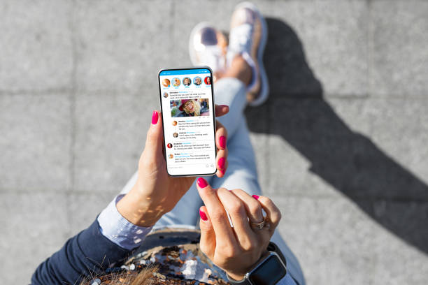

A Imagem Que Você Compartilha
Abril Azul da Consciência Digital


Em um tempo onde o digital é parte do nosso cotidiano, é essencial pensar: quem eu sou nas redes sociais? Essa pergunta vai além de filtros e seguidores — trata da coerência entre a imagem que mostramos e nossos valores reais.
A campanha Abril Azul da Consciência Digital traz debates, oficinas e materiais educativos para te ajudar a usar as redes de forma mais consciente, ética e segura.
Participe e comece a cuidar da sua imagem com o mesmo carinho que cuida de você!
Evite compartilhar dados pessoais como localização exata, número de documentos ou rotina diária. Ative autenticação em dois fatores nas redes.
Revise com frequência seus perfis. A imagem que você constrói é como uma vitrine: o que ela mostra sobre você?
Busque autenticidade. Nem tudo precisa ser perfeito — o que conecta as pessoas é a humanidade, não a performance.
Faça uma "faxina" nos seus perfis. Exclua posts antigos que não te representam mais e atualize as informações importantes.
Descubra como usar as redes a seu favor e construir uma imagem digital autêntica, segura e positiva.